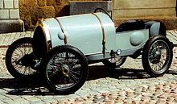
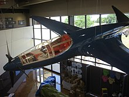

Bugatti
Automobiles Ettore Bugatti was a French car manufacturer of high-performance automobiles, founded in 1909 in the then-German city of Molsheim, Alsace by the Italian-born industrial designer Ettore Bugatti. The cars were known for their design beauty and for their many race victories. Famous Bugattis include the Type 35 Grand Prix cars, the Type 41 "Royale", the Type 57 "Atlantic" and the Type 55 sports car. The death of Ettore Bugatti in 1947 proved to be the end for the marque, and the death of his son Jean Bugatti in 1939 ensured there was not a successor to lead the factory. No more than about 8,000 cars were made. The company struggled financially, and released one last model in the 1950s, before eventually being purchased for its airplane parts business in 1963. In 1987, an Italian entrepreneur bought the brand and revived it as a builder of limited production exclusive sports cars based in Modena. In 1998, the Volkswagen Group bought the rights to the Bugatti marque and set up a subsidiary based back in Molsheim, Alsace.
Under Ettore Bugatti
Founder Ettore Bugatti was born in Milan, Italy, and the automobile company that bears his name was founded in 1909 in Molsheim located in the Alsace region which was part of the German Empire from 1871 to 1919. The company was known both for the level of detail of its engineering in its automobiles, and for the artistic manner in which the designs were executed, given the artistic nature of Ettore's family (his father, Carlo Bugatti (1856–1940), was an important Art Nouveau furniture and jewelry designer).

World War I and its aftermath
During the war Ettore Bugatti was sent away, initially to Milan and later to Paris, but as soon as hostilities had been concluded he returned to his factory at Molsheim. Less than four months after the Versailles Treaty formalised the transfer of Alsace from Germany to France, Bugatti was able to obtain, at the last minute, a stand at the 15th Paris motor show in October 1919. He exhibited three light cars, all of them closely based on their pre-war equivalents, and each fitted with the same overhead camshaft 4-cylinder 1,368cc engine with four valves per cylinder. Smallest of the three was a "Type 13" with a racing body (constructed by Bugatti themselves) and using a chassis with a 2,000 mm (78.7 in) wheelbase. The others were a "Type 22" and a "Type 23" with wheelbases of 2,250 and 2,400 mm (88.6 and 94.5 in) respectively.
Racing successes
The company also enjoyed great success in early Grand Prix motor racing: in 1929 a privately entered Bugatti won the first ever Monaco Grand Prix. Racing success culminated with driver Jean-Pierre Wimille winning the 24 hours of Le Mans twice (in 1937 with Robert Benoist and 1939 with Pierre Veyron). Bugatti cars were extremely successful in racing. The little Bugatti Type 10 swept the top four positions at its first race. The 1924 Bugatti Type 35 is one of the most successful racing cars. The Type 35 was developed by Bugatti with master engineer and racing driver Jean Chassagne who also drove it in the car's first ever Grand Prix in 1924 Lyon.[3] Bugattis swept to victory in the Targa Florio for five years straight from 1925 through 1929. Louis Chiron held the most podiums in Bugatti cars, and the modern marque revival Bugatti Automobiles S.A.S. named the 1999 Bugatti 18/3 Chiron concept car in his honour. But it was the final racing success at Le Mans that is most remembered—Jean-Pierre Wimille and Pierre Veyron won the 1939 race with just one car and meagre resources.
Aeroplane racing
In the 1930s, Ettore Bugatti got involved in the creation of a racer airplane, hoping to beat the Germans in the Deutsch de la Meurthe prize. This would be the Bugatti 100P, which never flew. It was designed by Belgian engineer Louis de Monge who had already applied Bugatti Brescia engines in his "Type 7.5" lifting body.
Design
Bugattis are noticeably focused on design. Engine blocks were hand scraped to ensure that the surfaces were so flat that gaskets were not required for sealing, many of the exposed surfaces of the engine compartment featured guilloché (engine turned) finishes on them, and safety wires had been threaded through almost every fastener in intricately laced patterns. Rather than bolt the springs to the axles as most manufacturers did, Bugatti's axles were forged such that the spring passed through a carefully sized opening in the axle, a much more elegant solution requiring fewer parts. He famously described his arch competitor Bentley's cars as "the world's fastest lorries" for focusing on durability. According to Bugatti, "weight was the enemy".